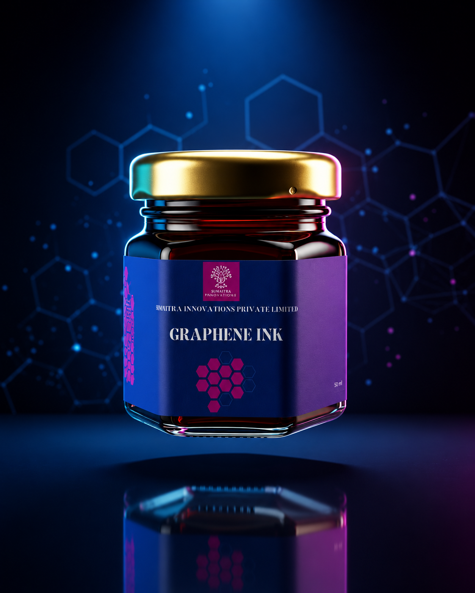
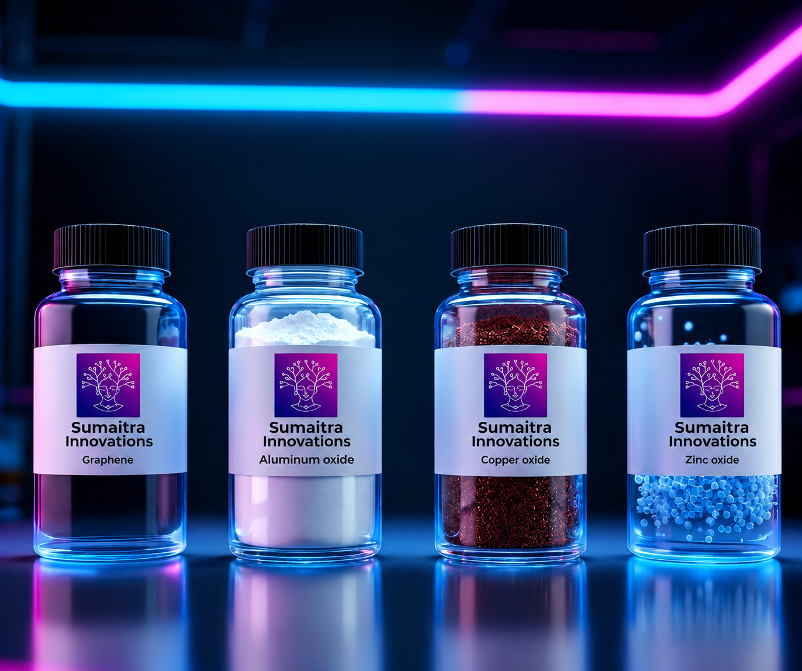

Graphene Ink
A high-performance, next-generation graphene-based conductive ink engineered for printed and flexible electronics. Exhibits high electrical conductivity, excellent film uniformity, strong substrate adhesion, and room-temperature processing.

Key Features
- ✓ High electrical conductivity
- ✓ Strong adhesion to paper, PET, glass, textiles, and flexible substrates
- ✓ Excellent film smoothness and uniformity
- ✓ Low-temp / room-temperature sintering
- ✓ Environmentally friendly water-based formulation
- ✓ Highly stable dispersion with minimal sedimentation
Technical Parameters
| Sintering Temp | Room Temperature |
| Sintering Time | 10–15 minutes |
| Color | Black |
| Printing Methods | Screen, Inkjet, Spray, Doctor blading |
Nanomaterials & Nanoparticles
Laboratory-grade powders and nanoparticles for research and industrial deployment.

Graphene
High-purity few-layer graphene optimized for electronics, energy storage, and functional composites.
| Layers | 1–5 layers |
| Thickness | 5–15 nm |
| Appearance | Black |
Aluminum Oxide
Exhibits high thermal stability, dielectric strength, and superior wear resistance for coatings & ceramics.
| Formula | Al2O3 |
| Size | 20–50 nm |
| Appearance | White powder |
Copper Oxide
p-type semiconductor materials known for their catalytic, antimicrobial, and electrochemical properties.
| Formula | CuO |
| Size | 20–60 nm |
| Appearance | Brown powder |
Zinc Oxide
Wide band-gap semiconductor materials for antimicrobial coatings, UV shielding, sensors, and photocatalysis.
| Formula | ZnO |
| Appearance | White Powder |
| Properties | Photocatalytic |